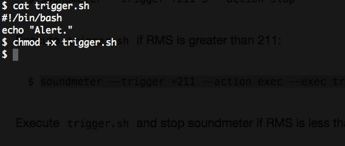

SoundMeter

SoundMeter is a command-line tool to obtain sound power in real time. It basically turns the audio recording functionality into a sound meter for machines that ship with audio input devices (e.g. microphone). It currently reveals the root-mean-square (RMS) of sound fragments, which is a measure of the power in an audio signal. The actual values also depend on the system settings of sound input.

Features
- A command-line meter that supports triggering upon events
- Monitor API for backend module programming
Dependencies
System packages
On Debian/Ubuntu:
$ sudo apt-get install portaudio19-dev python-dev alsa-utils
On Fedora/RHEL:
$ sudo yum install portaudio-devel python-devel alsa-utils
On OS X:
$ brew install portaudio
PyPI packages
- argparse
- pyaudio
- pydub
- python-daemon
Installation
You can install the package with pip using the following command to allow externally hosted packages:
$ pip install soundmeter --allow-all-external --allow-unverified pyaudio
Or, you can download a source distribution and install with these commands:
$ python setup.py install
Usage
The simplest usage is to run “soundmeter” from command-line without any options:
$ soundmeter
Collect RMS values for 10 seconds so that you will know the sound level in the current environment:
$ soundmeter --collect --seconds 10
Collecting RMS values...
154 Timeout
Collected result:
min: 152
max: 211
avg: 156
You can set trigger and action for soundmeter.
Stop the soundmeter if RMS is greater than 211 consecutively for 3 times:
$ soundmeter --trigger +211 3 --action stop
Execute trigger.sh if RMS is greater than 211:
$ soundmeter --trigger +211 --action exec --exec trigger.sh
Execute trigger.sh and stop soundmeter if RMS is less than 152
consecutively for 3 times:
$ soundmeter --trigger -152 3 --action exec-stop --exec trigger.sh
Run the soundmeter with trigger and action in the background:
$ soundmeter --trigger +211 3 --action exec --exec trigger.sh --daemonize
Run the soundmeter for 2 minutes and log to meter.log:
$ soundmeter --seconds 120 --log meter.log
Command-line Options
The “soundmeter” command accepts the following options:
-c, --collect collect RMS values to determine thresholds
-s SECS, --seconds SECS time in seconds to run the meter (default
forever)
-a ACTION_TYPE, --action ACTION_TYPE triggered action (``stop``,
``exec-stop`` and ``exec``)
-t THRESHOLD, --trigger THRESHOLD trigger condition (threshold RMS and
an optional number of consecutive triggering times, which defaults 1)
-e FILE, --execute FILE shell script to execute upon trigger (defaults
to ``~/.soundmeter/trigger.sh``), can be configured to pass the "last
triggering" RMS value as argument by setting ``rms_as_trigger_arg`` to
``True`` in ~/.soundmeter/config
-d, --daemonize run the meter in the background
--log LOGFILE log the meter (defaults to ``~/.soundmeter/log``)
-v, --verbose verbose mode
--segment SECONDS audio segment length recorded in seconds (defaults to
0.5); when specified, it overrides ``audio_segment_length`` in
~/.soundmeter/config